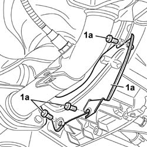
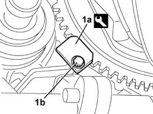
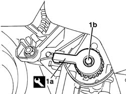
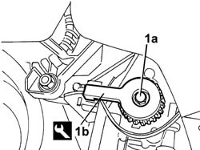
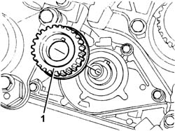
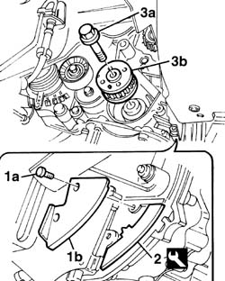
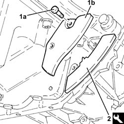
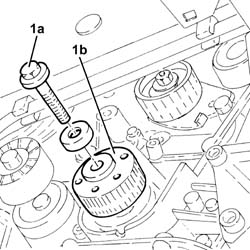
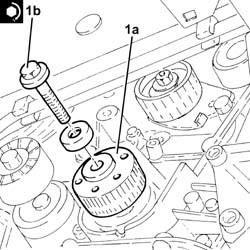
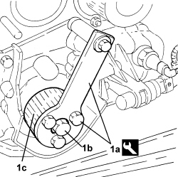

1032B44 toothed drive pulley - r + r with timing belt removed
- Path
- Procedures > 10 ENGINE > 1032 TIMING SYSTEM > 1032B BELT TIMING SYSTEM > 1032B44 toothed drive pulley - r + r with timing belt removed
- Kind
- repair procedure (removal / refitting; the operation number is the code)
- Applies to
- engines: 1.2 8v, 1.4 8v, 1.6 16v, 1.9 JTD 8V, 1.9 DIESEL; all production periods
- Interactive page
- https://sloeber94.github.io/elrnDB-fDbl/en/#/2584196
Applies to: engines: 1.2 8v; all production periods
 Removing
Removing
 Refitting
RefittingOp. 2110A60 MANUAL GEARBOX/ENGINE COUPLING BRACKET - R+R
1. Undo the fixing bolts (1a) and remove the flywheel guard (1b).

Applies to: engines: 1.2 8v; all production periods
1. Fit the tool (1a) and secure it using an ordinary bolt (1b).
Description | Code | |
|---|---|---|
1a | Counter-torque | 1.860.771.000 |

Applies to: engines: 1.2 8v; all production periods
1. Fit the tool (1a) and remove the pulley loosening the fixing bolt (1b).
Description | Code | |
|---|---|---|
1a | Counter-torque | 1.870.744.000 |

Applies to: engines: 1.2 8v; all production periods
Refitting
Removing1. Fit pulley (1a) and position tool (1b).
Description | Code | |
|---|---|---|
1b | Counter-torque | 1.870.744.000 |

Applies to: engines: 1.2 8v; all production periods
Tighten the bolt securing the pulley to the crankshaft to torque.
Fastening | Component | dia | Value (daNm) | |
|---|---|---|---|---|
- | Bolt | DRIVE PULLEY/S TIMING | M11 | 2 + 90° |
Remove the flywheel lock.
Description | Code | |
|---|---|---|
1a | Counter-torque | 1.860.771.000 |
Position the flywheel guard and tighten the fixing bolts.
Applies to: engines: 1.6 16v; all production periods
Removing
Refitting1. Release the toothed drive pulley and remove it.

Applies to: engines: 1.6 16v; all production periods
Refitting
RemovingPlace the toothed drive pulley in its housing on the crankshaft.
Applies to: engines: 1.9 DIESEL; all production periods
Removing
RefittingArrange a hydraulic jack beneath the engine to support it.
Fit the timing side engine mount by screwing in the nuts to the body and engine without tightening.
1. Undo the retaining bolts (1a) and remove flywheel guard (1b).
2. Position the flywheel lock.
3. Undo the fixing bolt (3a) and remove the pulley (3b).
Description | Code | |
|---|---|---|
2 | Counter-torque | 1.860.898.000 |

Applies to: engines: 1.9 DIESEL; all production periods
Refitting
RemovingPosition the pulley in the special housing on the crankshaft.
Tighten the fixing bolt to torque.
Fastening | Component | dia | Value (daNm) | |
|---|---|---|---|---|
- | Left hand bolt | DRIVE PULLEY/S TIMING | M16 | 34 |
Remove the engine flywheel lock and fit the flywheel guard.
Description | Code | |
|---|---|---|
- | Counter-torque | 1.860.898.000 |
Arrange a hydraulic jack beneath the engine to support it.
Remove the timing side engine mount by unscrewing the nuts from the body and engine.
Applies to: engines: 1.9 JTD 8V; all production periods
Removing
Refitting1. Undo the bolts (1a) and remove the protection (1b).
2. Fit the flywheel lock.
Description | Code | |
|---|---|---|
2 | Counter-torque | 1.860.898.000 |

Applies to: engines: 1.9 JTD 8V; all production periods
1. Undo the bolt (1a) and the toothed drive pulley (1b).

Applies to: engines: 1.9 JTD 8V; all production periods
Refitting
Removing1. Position the toothed timing drive pulley (1a) in its housing and secure it tightening the bolt (1b) to the recommended torque.
Fastening | Component | dia | Value (daNm) | |
|---|---|---|---|---|
1b | Left hand bolt | DRIVE PULLEY/S TIMING | M16 | (Crankshaft side) 32.3 - 35.7 |

Applies to: engines: 1.9 JTD 8V; all production periods
Remove the flywheel lock.
Description | Code | |
|---|---|---|
- | Counter-torque | 1.860.898.000 |
Place the protection back in its housing and secure it using the bolts.
Applies to: engines: 1.4 8v; all production periods
Removing
Refitting1. Fit tool (1a), unscrew bolt (1b) and remove the toothed drive pulley (1c).
Tool | Description | Function | Validity |
|---|---|---|---|
2000004500 | Template | Crankshaft timing | 1.2 8v 1.4 8v |

Applies to: engines: 1.4 8v; all production periods
Refitting
Removing- Position the toothed timing drive pulley in its housing and tighten the bolt to the recommended torque.
Component | Fastening | dia | Value (daNm) | Validity |
|---|---|---|---|---|
Crankshaft gear | Bolt | M11 | 1.9 ÷ 2.1 + 90° +/- 3° | 1.2 8v 1.4 8v |
Topics linked from this page (1)
Topics that link to this page (7)
- 1020D10 front crank shaft oil seal cover - r + r and replace seals with timing belt removed
- 1020D12 front crank shaft oil seal cover - r + r and replace seals
- 1020D14 front crank shaft oil seal cover - r + r and replace seals for versions with oil pump on crank shaft, timing side
- 1020D18 front crank shaft cover oil seal - replace
- 1020D20 front crankshaft cover oil seal - replace for versions with air conditioner
- 1032B46 toothed drive pulley - r + r
- 1032B47 toothed drive pulley - r r for versions with air conditioner